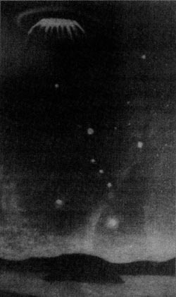

A Annemasse (Haute Savoie), un témoin en vacances voit
les déplacements de 3 phénomènes en forme "d'œufs" légèrement applatis. De couleur brillante, ils émettent des
rayons lumineux. Aucun autre témoignage ne sera recueilli sur le secteur d'observation, secteur par ailleurs
régulièrement survolé par des avions provenant de 2 aérodromes à proximité. Le témoin a probablement fait une
observation d'aéronef Courrier reçu par la gendarmerie < GEPAN : PAN classé B.
En Angleterre, plusieurs témoignages
signalent une lumière brillante pulsante, émettant une traînée de vapeur, mais sont écartés en raison du
penchant des témoins pour l'alcool. Un rapport officiel conclut : 4 témoins buvaient au bar du coin et leurs
observations furent écartéesMoD < Robert Verkaik, "UK's Ministry Of Defense UFO Files Released", The Independent, UK, 22 janvier 2005.
A Dardilly (Rhône), 2 personnes observent dans le ciel
pendant quelques s une boule blanche très lumineuse se déplacer à vive allure sans aucun bruit, et disparaître de la
vue des témoins en s'éloignant GEPAN : PAN classé C.
A Isle-sur-Serein (Yonne), un témoin voit un phénomène
blanc lumineux ovale dans les nuages GEPAN : PAN classé C.
A Tenterden (UK), une lumière blanche brillante ayant attiré l'attention d'une femme
est immédiatement rapportée à la police de Ashford et ses observations notées avec attention MoD < Robert Verkaik, "UK's Ministry Of Defense UFO Files Released", The Independent, UK, 22 janvier 2005.
A sud-ouest de Londres (
Angleterre), une femme ressent un besoin irressistible de regarder dehors et alors qu'elle le fait,
reçoit soudain l'image mentale d'un objet métallique très sombre avec des cannelures verticales autour de sa
circonférence, en vol au-dessus d'elle. Elle sent que l'objet vient d'une autre dimension, et se sent observée. Elle
revient à la cuisine, mais revient plus tard pour voir toujours l'image de l'appareil. A ce moment elle reçoit aussi
l'image mentale d'un humanoïde et de son visage, long et d'apparence métallique, plate et dénué de caractéristiques
; il a de longs yeux inclinés, un nez droit, et un trait en guise de bouche. L'entité porte une combinaison moulante
avec un grand symbole triangulaire sur la poitrine ; elle a une ceinture avec une pierre ressemblant à un rubis
rouge en son centre. L'être et l'appareil finissent par disparaître HC addition # 1000 -- Bufora Journal Vol. 8 # 4.
Lancement de Voyager 1. Elle survolera Jupiter et Saturne puis s'enfoncera dans l'espace
interplanétaire.
A Colusa (Californie), Bill Pecha observe des disques à courte distance de
son domicile.
Dans le Maine (USA), Herbert Hopkins reçoit la visite d'un MIB alors qu'il enquête sur un cas d'apparition
d'ovni dans le Maine. Sa belle-fille et son fils recevront également une visite.
A Isle-sur-Serein (Yonne), une femme et un homme Femme interrogée par la gendarmerie mais homme non retrouvé observent le déplacement nord-sud
d'une lueur rougeâtre, sans aucun bruit ni traînée sur le passage Article de presse relatant l'observation d'un "ovni" par 3 témoins < enquête gendarmerie < GEPAN : PAN classé C.
Photographie de l'observation de Petrozavodsk le 20 Septembre

A Petrozavodsk (Karelskaya, aujourd'hui Karelian,
Russie), une immense lumière semblable à une étoile apparaît soudain, s'allonge en forme de méduse, et se
déplace silencieusement au-dessus de la ville puis stationne au-dessus d'elle durant 10 à 12 mn. De fins rayons de
lumière en descendent. Puis l'ovni se déplace vers l'Est, franchissant le lac Onega, et devient une lumière rouge et
semi-circulaire à l'intérieur d'un nuage gris. Il est observé depuis aussi loin qu'Helsinki (Finlande). Panique et
rumeurs non fondées s'emparent de Petrozavodsk après l'apparition Rapport de l'agence TASS.
Dans l'Yonne, des gendarmes
observent le ballet de plusieurs engins lumineux. Leur rapport décrit : Constatons depuis notre point
d'observation que des ensembles lumineux évoluent dans l'atmosphère terrestre à des vitesses
vertigineuses... Les enquêêen dénombrent 7. Ces objets volants non identifiés (ovnis) sont, pour
certains, en forme de losanges dont les angles sont éclairés par plusieurs feux émettant une lumière
blanchâtre incandescente. Quelques-uns présentent en leur milieu une forte lumière rouge orangé, nettement
visible, envoyant des éclats. D'autres, circulaires, donnent l'impression d'être eêeacute;s sur leur
périphérie d'une rampe concentrique comportant un bon nombre de lumières : celles-ci sont de couleur blanche
ou jaunâtre. Ils se perdent dans l'infini. Aucun ne change de forme ou de couleur. Ces ovnis circulent en
effectuant des mouvements très désordonnés, ascendants ou descendants, rotatifs ou spiroïdaux, à des vitesses
fulgurantes. Ils se stabilisent, redémarrent brutalement... Ils disparaissent ou réapparaissent subitement au
cours de leurs évolutions. Durant toute l'observation faite par les militaires de la gendarmerie, il n'est entendu aucun bruit de moteur ou de
réacteur provenant de ces ovnis et nous ne remarquons aucun sillage de leur passage. Ces ovnis ne proviennent
pas particulièrement d'une seule direction, de la même fa&ccediê'ils disparaissent vers n'importe quel point.
Un ovni se rapproche des observateurs : Une grosse boule lumineuse
rougeoyante apparaît. Elle s'arrête, puis ê à nouveau à vitesse réduite et horizontalement sur une distance
d'environ 600 m. A ce moment, son altitude est évaluée à 60 m. Un témoin l'observe à la jumelle. Il
n'observe qu'une sphère rouge orangé, ceinturée d'un halo clair et étroit, sans remarquer une quelconque
activité sur ou autour de celle-ci. L'engin mystérieux stoppe au niveau de la corne d'une peupleraie et s'efface
dans l'obscurité... Sa manoeuvre ralentie à duré quelques mn.
Les évolutions des ovnis cessent progressivement et le dernier est vu à 21 h
45, heure à partir de laquelle le ciel a retrouvé sa tranquilité.
A Parkstone Dorset (Angleterre), se rendant dans son jardin pour y prendre du
linge, Mme Ethel Field ressent une vibration dans le sol, et pense d'abord à un tremblement de terre. Puis elle
entend un bruit de ronflement et, en cherchant vers la mer, voit un grand objet en forme de soucoupe swooping
upwards au-dessus des jardins voisins et se déplaçant vers elle. L'objet est brillant et éclatant, métallique, et
dans un dôme au sommet, à travers des fenêtres carrées, elê 2 personnages. L'objet s'arrête à une courte distance et
s'incline vers elle. Un des personnages semble se trouver à un panneau de contrôle, et l'autre la désigne. La
lumière est si intense qu'elle doit mettre ses mains devant ses yeux. Les personnages portent des combinaisons
argentées avec des casques ajustés venant à un endroit au-dessus de leur nez. Après un bref moment l'objet s'éloigne
dans le ciel. Une semaine après l'observation la peau sur ses mains commence à peler -- un problème qu'il n'avait
pas eu auparavant Humcat 1977-63David Haith du Bournemouth Times.